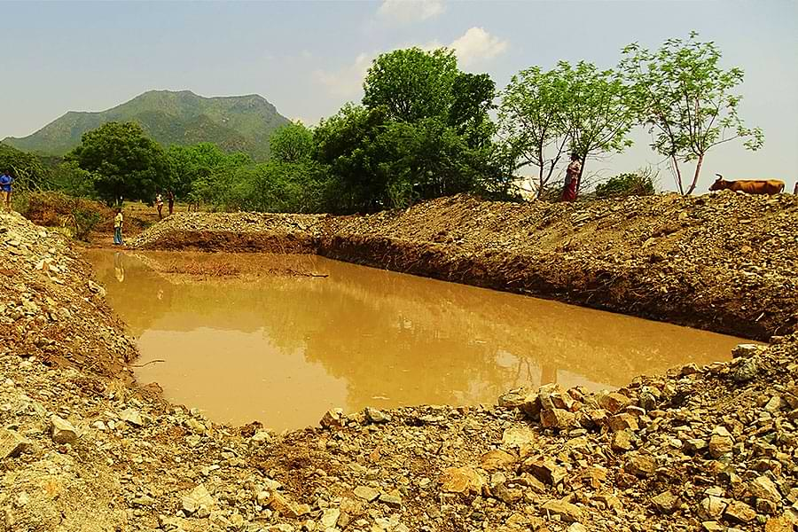

The rainwater received during monsoon can be stored effectively to recharge groundwater through suitable structures like recharge trenches (Check dam), recharge pits (Community pond & Farm pond), bore wells and open wells. Harvested water used for supplementary irrigation during the period of moisture stress at critical growth stages of crop.
I. Community Pond
Structures in the community land is commonly used to store rainwater. Community pond collects excess runoff water during monsoon season and recharge borewells and open wells in the surrounding areas. The available community ponds should be renovated and keep ready to capture excess run off water. If no community pond is available, new ponds should be constructed. A 301 ft Length × 180 ft Breadth × 15 ft Depth sized pond can capture 22,999 cu.m of rainwater.
II. Farm Pond

Farm ponds can be created at the farmers’ fields and used to collect the rainwater during monsoon season. A 20 ft × 20 ft × 5 ft sized pond can capture 55 cu.m rainwater in their field, that assists to recharge their open wells and bore wells. Water retention may be seen for 2 to 3 months during the monsoon season.
III. Check Dam
Prevents overflow during rainy season which increases the recharge of ground water level.